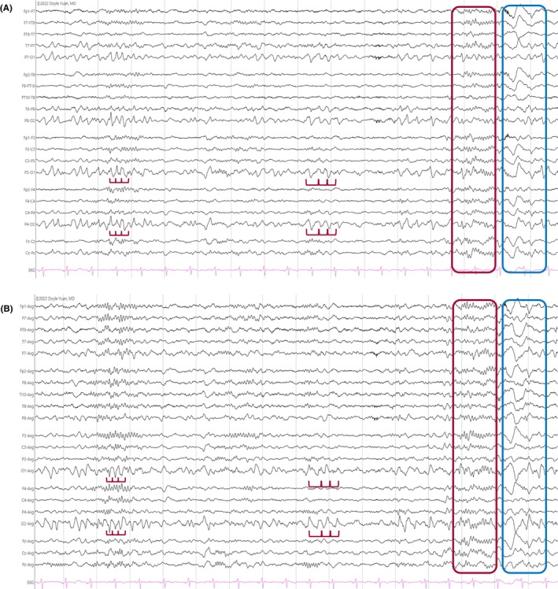

Caso clínico · Pág. 17 de 20
Mioclônica juvenil: susto ao despertar e 4–6 Hz
Adolescente que virou a noite no videogame; ao acordar cedo, tem sustos — abalos mioclônicos. O que falta no relato? A privação de sono, que é o gatilho clássico da mioclônica juvenil. É a síndrome do “desastrado” matinal com EEG mais rápido que o da ausência.
13–20 anos e mioclonia ao despertar
A epilepsia mioclônica juvenil — epônimo na fala da fonte: síndrome de Jansen (proveniência provável Janz/JME; o “packaging” da fonte é preservado) — tem faixa de 13–20 anos. A base são várias crises mioclônicas, sobretudo ao despertar.
Coexistência TCG/ausência
Pode coexistir com TCG e ausência; a mioclonia é o carro-chefe (precisou ter abalo mioclônico em algum momento).
Privação de sono
O desencadeante importante é a privação de sono (ex.: videogame a noite toda + acordar cedo → “sustos” e possível TCG).
Privação de sono · o gatilho que fecha o caso
O adolescente não dormiu e acordou cedo — o córtex com tendência a hiperexcitabilidade foi disparado justo no despertar. Corrigir o sono é parte do tratamento, não conselho paralelo.
EEG 4–6 Hz e VPA
VFP [186]: o EEG mostra ponta-onda 4–6 Hz (mais acelerado que a ausência). O tratamento de escolha no discurso é o valproato.
Caixa-nuance · [186] Documentos ILAE de síndrome alargam para ~3–5,5 Hz / 3–6 Hz. O contraste didático com a ausência (3 Hz vs mais rápido) permanece correto. Pode-se citar “4–6 Hz (faixa 3–6 Hz em critérios ILAE)” sem matar o contraste.

Resumo operacional
13–20 a · mioclonia ao despertar · pode ter TCG/ausência · 4–6 Hz · VPA · sono.
Por que importa
Esquecer a privação de sono é perder o gatilho tratável; chamar a JME de ausência pelo EEG é errar a droga (VPA, não ETX).
Quiz
Conexão
No adulto, o rei das focais com perda de consciência é o lobo temporal — e lá o hipocampo é a chave.